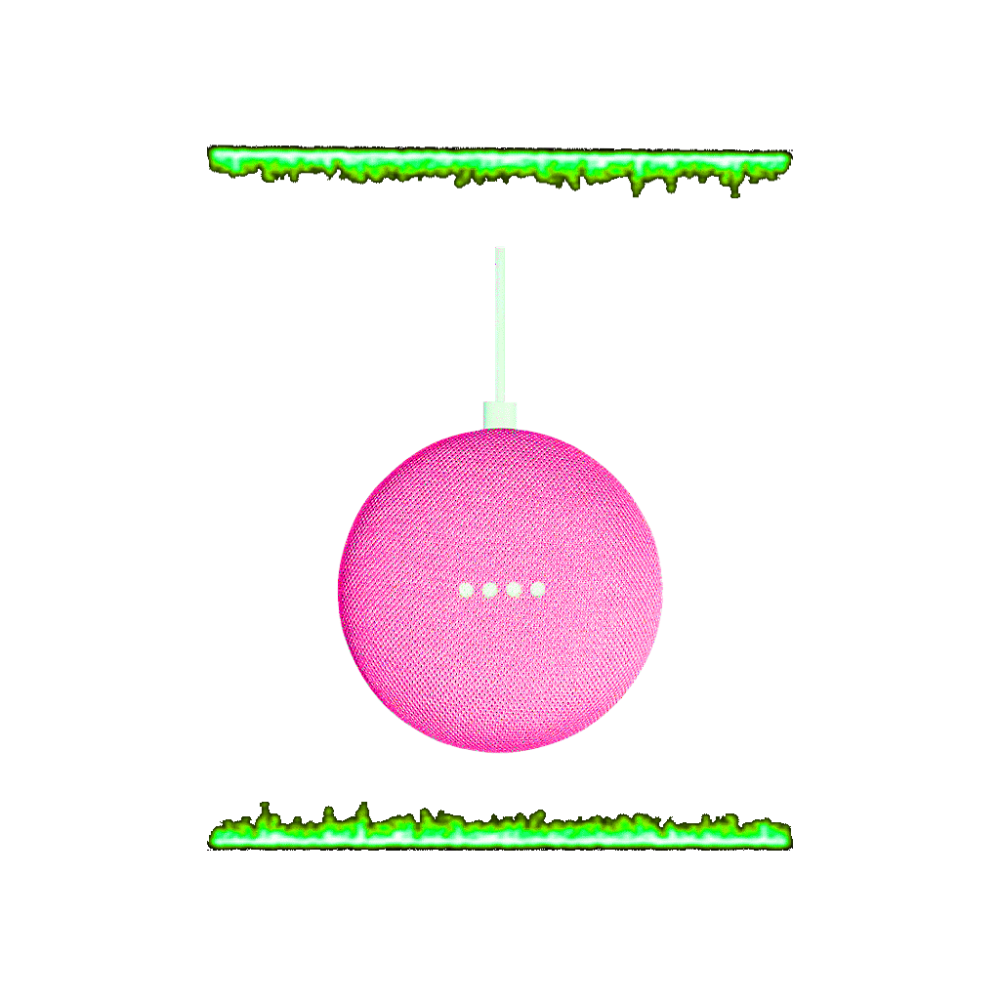

We are looking at it. It is also looking at us. The object is around four inches in diameter and is shaped like a skipping rock. Its top is covered by perforated fabric with four LEDS underneath. The fabric allows the LEDS to shine through to the user. They are arranged in a neat line going across the middle of the device. When powered on each light goes off displaying the colors blue, red, yellow, and green in order. White lights will bounce back and forth when its connecting to wifi, or slowly light up left to right to indicate a download. The device color can be either aqua, chalk, charcoal, or coral. It is made partially of recycled materials and plastic. It is very light to hold and crafted so it will not break easily. On the back of it there includes a mute switch and a port to charge the device. Underneath the colored fabric top and the LEDs is a smart speaker/AI device.
To wake up the device you must use the words "OK Google" or "Hey Google" and it will spring to life. The google home works as an in home personal assistant. You can ask it questions like "What’s the weather?", "What time is it?", "Can you turn off the light?", "Can you tell me a bedtime story?", "Can you tell me a joke?", "Can you play soft jazz?", "How do you spell..?", "What's the name of this song?", "Can you set an alarm?" "When is Mother's day?", "What restaurants are near me?", "Can we plan my skincare routine?", "Can you help with homework?", "Can you find me a dentist?", "Can I report a crime?", "Where can I buy a gun?".

The device is able to carry out simple commands that you give it using your voice. It is able to connect to your lights, appliances, security system, thermostat, various entertainment systems, and computer accessories. The device is in an "always-listening" mode so that its ready to receive commands at any moment.
After the words leave your throat they get packaged up and sent out to the google servers. Your words and tone of them are broken down and analyzed by an algorithm. The server then tries to match it with the question it thinks you have asked. If it has failed this google home will respond asking what you meant or will apologize to you. While this process goes on the smart home is also checking to see if your command is a local one like "Can you turn up the volume?" or "Stop the music please". It will also be checking for links in communication to third party devices like asking to turn off the lights. The device will continue communicating with the server until it has found a resolution, packaged it up, and sends it right down your ear.
It is fairly easy to acquire a google home. The mini being described only costs twenty five dollars, which is affordable to most. The max clocks in at around two hundred and fifty dollars and there are other devices in-between in price range. The google mini is also handed out for free for the most part. This fall it took place in its second promotion on spotify where anyone with an account was eligible for a free mini. It begs the question why are these AI devices being handed out for basically no cost?
One feature lacking from google home is security. The FBI has issued warnings about using smart devices, especially when connected to other appliances. This is because hackers are able to use the device to see a virtual inventory of what you own. Having unsecured devices allows people to access a path into your router and see the whole home network. You can take precautions against this on your own but many of the public is unaware or not worried by it.
Google home's crazy accessibility to the public can be seen as worrisome to those who are surveillance anxiety prone. The conversations you have are encrypted by google and not accessed by them. But they can potentially be accessed by others. They could also be used unethically in the future or now. How are you to know when you’re being listened to when its mode is "ALWAYS LISTENING"?